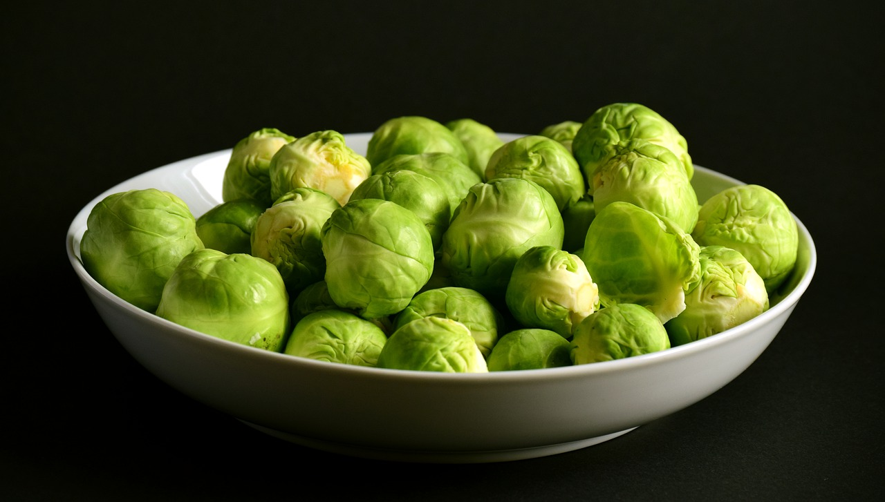
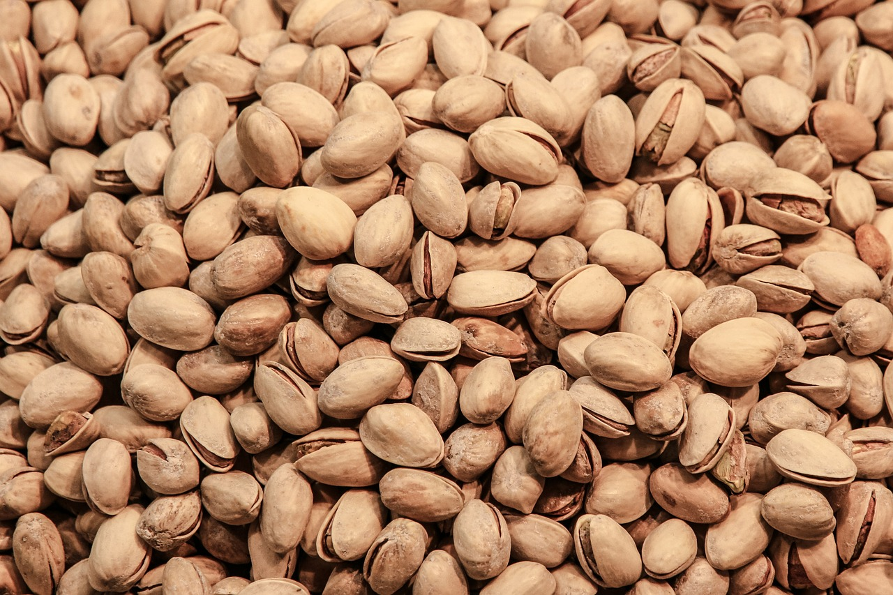
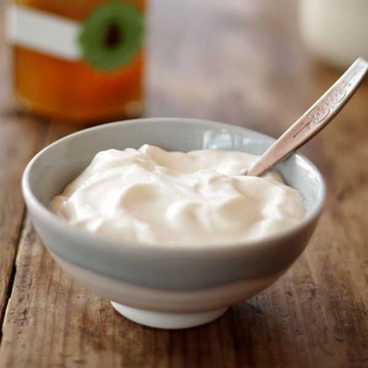

"Comer bien es una forma de respetarse a uno mismo"
Salmón:

Cuenta con un alto contenido ácidos grasos omega-3 que pueden beneficiar de gran manera nuestro corazón y el cerebro. Además, es rico en vitamina D y los profesionales recomiendan comerlo al menos una vez a la semana
Coles de bruselas:

Cuenta con un alto contenido de vitaminas del tipo: A, C y K que la hacen ideal para la salud. A ellas se le suman los minerales como el potasio y ácido fólico que producen un antioxidante realmente importante para la salud.
Arándanos:

Son ideales para su consumo diario, esto se debe principalmente al gran aporte de vitamina C que tiene en el cuerpo. También tiene una buena dosis de vitamina A y fibra.
Nueces:

Además de ser uno de los alimentos más saciantes que pueden existir, las nueces resultan ser ideales para la salud. Al ser consideradas como una grasa buena, son sumamente ricas en aceites saludables, proteínas y vitamina E.
Yogurt natural:

Cuenta con una alto contenido de proteínas, calcio, magnesio y vitaminas del tipo B12. Este deberia ser natural, de lo contrario el azúcar que contiene podría quitarle todos los beneficios que podría aportar realmente.